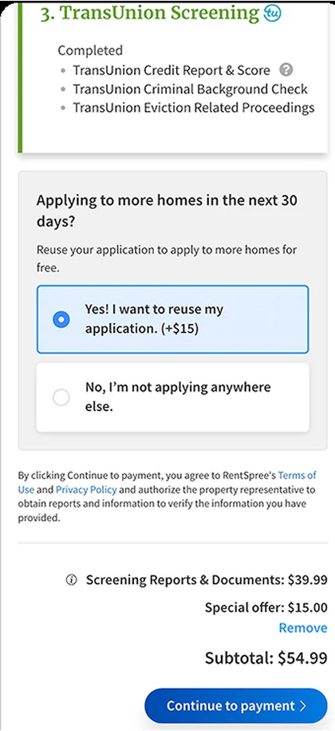
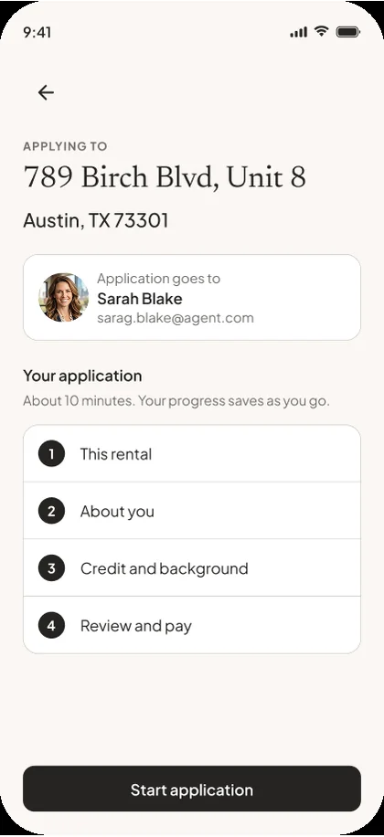

Deck
A mini portfolio. Three to six projects, one per screen, each in its own color.
- Type
- Proxima Nova, Inter
- Stack
- Vite + React, no animation library
- Live
- 2026folio.micahburger.com
Scroll
Principles
Everything below comes from four live sites: the 2026 mini portfolio, the rental application case study, Lattice and the earlier case studies at micahburger.com. These rules are what they share.
One idea per screen. Text on the left, the product on the right.
Very large, tightly set titles against small, quiet body copy and labels. Titles sit under a line-height of 1 with negative tracking.
Each project owns its background. Chrome stays neutral and inverts against it automatically.
Never pure black on pure white for text. Ink is #141414, paper is #F4F1EC, cream is #FAF7F3.
Media moves first, copy follows. Exits are shorter than entrances. Every animation has a reduced-motion version.
Fewer elements, fewer words. Nothing decorative that does not explain the work.
Registers
Pick one before building. A register sets the color, type, layout and stack. A case study can also carry a product register: the real product UI, scoped under .product so it never styles the shell.
A mini portfolio. Three to six projects, one per screen, each in its own color.
One deep case study read top to bottom. Dark, editorial, annotated screens.
A new site that needs a different mood. Any atmosphere plus any type set below.
Color
Neutrals are warm and few. Accent is rare. Click any swatch to copy its value.
The header and dots pick light or dark from the background: light when .299r + .587g + .114b is above 150.
Used only by the hero scramble. Nowhere else.
Seven moods. Set data-atm on any element to re-skin it.
Type
Titles carry the page. Everything else steps back.
Applying for a rental is long, sensitive, mostly completed on a phone, and ends with a payment.
Editorial
A quiet life. Well made.
Essays on design, culture and the details that quietly shape everyday life.
Contemporary
A quiet life. Well made.
Essays on design, culture and the details that quietly shape everyday life.
Fashion
A quiet life. Well made.
Essays on design, culture and the details that quietly shape everyday life.
Luxury
A quiet life. Well made.
Essays on design, culture and the details that quietly shape everyday life.
Mono
A quiet life. Well made.
Essays on design, culture and the details that quietly shape everyday life.
Space and surface
Space does the grouping. Surfaces, radii and shadows are used sparingly and always from this short list.
--space-sectionclamp(64px, 10vw, 120px)--gutterclamp(20px, 6vw, 48px)--content-max1080px, 1300 to 1407 for media--page-margin-left140px--page-margin-top130px--page-margin64px--page-margin-mobile28px, top 96px| Nav | Section | Gap | Element | Micro | |
|---|---|---|---|---|---|
| Generous | 64 | 72 / 60 | 44 | 28 | 18 |
| Rhythmic | 56 | 48 / 40 | 24 | 16 | 8 |
| Compact | 44 | 24 / 24 | 12 | 12 | 6 |
--radius-sm8px--shadow-sm--radius-md14px--shadow-md--radius-lg20px--shadow-lgpill999pxMotion
Five curves cover everything. Distances stay small: 12px for lists, 16px for copy, 24px for reveals, 40px for direction. Only transform and opacity move, plus a page color wash.
Reduced motion is on for this device, so the demos below play instantly.
Media leaves 320ms, copy follows 120ms later. New media arrives at 160ms, copy at 320ms. Page color crossfades 560ms.
Auto every 4.2s, 700ms move curve. Click or drag: 400ms settle curve. Drag past 20% or flick to commit.
FLIP with the Web Animations API, 650ms move curve. Others dim to 15% in 200ms. Click a card, then click again or press Escape.
Rise 24px and fade, 400ms enter curve, once per section.
Pills 1.12, cards 1.05, 320ms enter curve. Fine pointers only.
In: 36px and fade, 240ms enter curve. Out: 180ms exit curve.
Design controls
16px white dot with difference blending. Orange over anything clickable, darker while grabbing. Move into the box.
GSAP SplitText. On hover each character flashes a spark color for 300ms, rippling out from the center. Half swap to a random glyph, a third show their width. After 6s idle a random line plays every 4s.
The live version is the title at the top of this page.
Recommended for multi-page sites. Native View Transitions with the same curves. Chrome, Edge and Safari animate it, Firefox simply navigates.
@view-transition { navigation: auto; }
::view-transition-old(root) { animation: .32s cubic-bezier(.65,0,.35,1) both vt-out; }
::view-transition-new(root) { animation: .38s cubic-bezier(.23,1,.32,1) .16s both vt-in; }
@keyframes vt-out { to { opacity: 0; transform: translateY(-16px); } }
@keyframes vt-in { from { opacity: 0; transform: translateY(16px); } }
.case-hero-media { view-transition-name: hero-media; }Required on every build. Transitions drop to 120ms, keyframes are removed, view changes become a 150ms crossfade, carousels stop, zooms become fades, and the hero is never split.
Components
Most pages need only these. Each one already exists on a live site.
Centered, Inter 500 14px. The pill fills with the header color and takes the page color as its text, so it always inverts.
Placeholders inside a 786 by 762 box. Real exported screens drop the frame and its shadow.
8px circles, 12px apart, with a 12px invisible hit area. Active dot is the text color at 90%.
Fixed bottom right. Opens the jump list. Hidden while the hero is in view. Try the real one on this page.
The flow never said how much was left.
Typos surfaced after reports were pulled.
Mono number in accent, Instrument Sans title, short body, hairline rule between items.
Moment one
Sit beside a screen. Sticky on wide screens so they travel with the phone they describe.
Mono 11px, uppercase, muted. Underline appears on hover. Never accent colored.
Mono 12px on the surface color. The current section takes the accent.
Layouts
The deck holds one composition per screen. The long-form page stacks a few repeatable sections.
Portfolio patterns
Five patterns for indexes and case studies. The ideas come from Semplice's portfolio grids; every value here is rebuilt in this system's tokens and motion.
Rows on hairline rules. Hover fills the row with that project's page color, from the bottom, 250ms enter curve. A preview follows the cursor with a soft lag. Use it as a homepage index.
Large centered titles. Hover dims the others to 20% and brings that project's screen up behind, 400ms enter curve. Calmer than the table, for three to six projects.
Drag the divider, or focus it and use the arrow keys. The divider settles with the 400ms settle curve when you click instead of drag. Every redesign case study should have one.


Rental application redesign
The old step led with an upsell and a subtotal. The new one starts with who gets the application, how long it takes and what comes next.
One sentence per case study, usually the thesis. Words go from rule gray to foreground as the line crosses the middle of the screen. Plain scroll position, no library. Reduced motion shows it fully lit.
Payment placement was never the real variable. Comprehension was. That idea became the foundation for the next test.
On these patterns the dot grows into a pill that says what a click does: View on links, Drag on the slider. Ink on the active cursor color. Fine pointers only; touch never sees it.
data-cursor="View" on any element. The nearest one wins.Case studies
Two templates. Both end with something measured.
Deck card
Applicant experience
Problem. Applying for a rental is long, sensitive, mostly completed on a phone, and ends with a payment.
Move. I restructured the application into clear chapters that follow the applicant's mental model.
Media. Three screens, each with a plain label.
Long-form, seven sections
Every case study needs at least one number.
"22% rise in video call scheduling." "Closings 3 days faster." If the number is not known yet, leave a marked placeholder. Never invent one.
Voice
No em dashes.
The flow had no save point. People left.
The flow had no save point — and people left.
Headlines are sentences.
Designed to be picked back up.
Progress & Resumption Framework
First person for decisions.
I collapsed the common path to a few taps.
The team leveraged synergies to streamline workflows.
Name the real insight.
Payment placement was never the real variable, comprehension was.
We tested several payment placements.
Restraint over addition.
Cut the adjective, the second example and anything the screen already shows.
An incredibly intuitive, beautifully crafted, seamless experience.